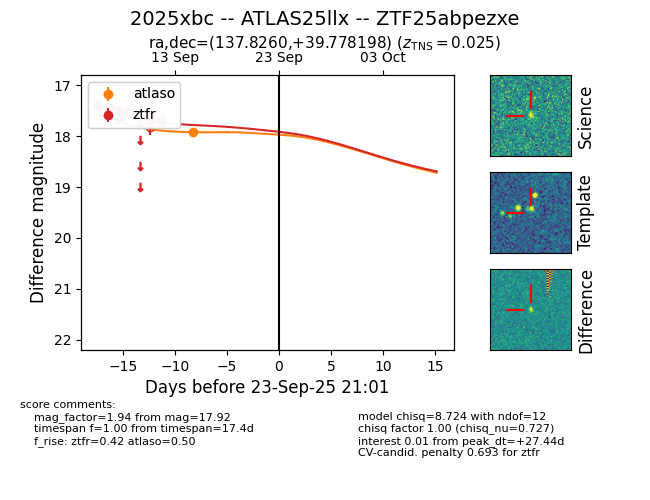
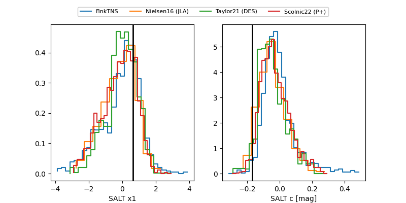

FINK: ZTF25abpezxe
Lasair: ZTF25abpezxe
ALeRCE: ZTF25abpezxe
TNS: 2025xbc
YSE: 2025xbc
ZTF25abpezxe (ztf,fink)
2025xbc (tns,yse)
ATLAS25llx (atlas)
equatorial (ra, dec) = (137.8260,+39.77820)
galactic (l, b) = (182.5932,+43.13612)


last atlaso=17.92, ztfr=17.67
1 atlaso, 13 ztfr detections